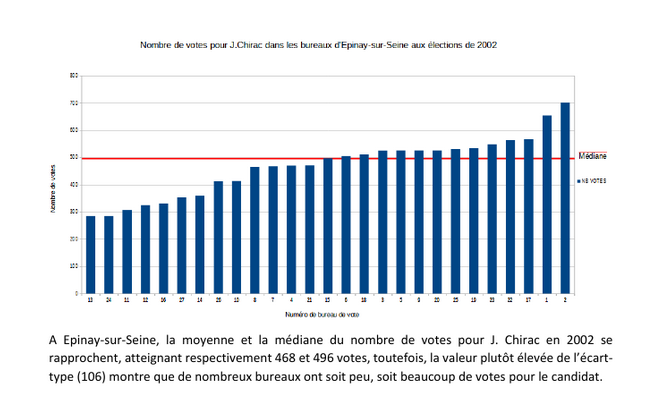

Statistique univariée
Télécharger et ouvrir le fichier de données du cours.
data <- read.csv2("data/potentiel-fiscal-resultat-gc.csv")
maData <- data [data$Département == '93',]1 Termes
1.1 Trouver des termes pour les objets en statistiques
exemples
variable,
observation,
valeur
A vous !
On retiendra pour le moment uniquement les termes : individu / population / variable et modalité
1.2 distinguer tableau complet, tig, tableau condensé
Individu -> Modalité
Modalité -> Individus
2 L’essentiel : la forme d’une distribution
2.1 Abscisses et ordonnées

2.2 Tiges et feuilles
discrétisation la plus rudimentaire
2.3 Et sous un tableur
2.3.0.1 Resultat attendu

Et non pas :

2.3.1 Préparation de l’exercice
2.3.1.1 Pour obtenir un TIG avec une seule variable, quelle variable choisir et pour quels individus ?
Dans l’exemple proposé du cours (Potentiel fiscal et police municipale), on choisit la colonne de la dénomination des communes (26 communes sur le 93) et le nombre d’agents
Cet exercice permet d’utiliser dans le tableur :
utilisation de la barre de formule
formule frequence, formule matricielle (CTRL + MAJ + ENTREE)
le graphique en barre et la personnalisation (transformation données étiquettes)
formules du tableau

2.3.2 Quel commentaire ?
- étendue
## Min. 1st Qu. Median Mean 3rd Qu. Max.
## 3.00 9.25 14.00 16.15 19.00 63.00Concernant notre exemple, il y a une grande disparité entre les communes, certaines ont 3 agents, d’autres 63
- forme de la distribution
L’énorme majorité des communes ont moins de 20 agents. Une seule commune possède plus de 60 agents, il s’agit d’Aulnay sous Bois. Son maire étant un ancien lieutenant de la police nationale.
2.4 A explorer
graphique en barres, lignes (lissage)
Observer la disposition des bornes : elles sont utilisées comme des étiquettes et non pas comme une série de valeurs.
Sous R, l’histogramme est un des graphiques le plus simple à obtenir.
L’histogramme souligne l’originalité d’Aulnay sous bois par rapport autres communes.
2.5 Correction exercice dénombrement des agrégats financiers
Des retours très nombreux (46 sur 60). Beaucoup d’étudiants ont buté sur la difficulté de la numérotation décimale et ont utilisé le fichier vu en classe, pas de problème dans le cadre d’un exercice.
2.5.1 Le séparateur décimal (, ou . ?)
Sous Calc, l’astuce consiste à modifier les paramètres linguistiques.
Pour un tableur, le chiffre se positionne à droite de la cellule, le texte à gauche.
L’autre solution était d’utiliser le format excel.
2.5.2 Commentaires généraux qui valent pour tous les exercices et surtout le DST
2.5.2.1 De quoi on parle ?
Attention à toujours définir sa donnée dés le départ, dans le cadre de notre cours, c’est la commune et son département puis l’agrégat choisi.
2.5.2.2 Pour la forme
Ne jamais mettre un tableau de données dans sa copie !
Ne jamais prendre en photo son écran !
Le mieux traitement de texte dans lequel on insère un graphique image.
Attention aux nombreuses pages inutiles si on passe directement du tableur au traitement de texte.
Soigner ses titres
Par contre, pas de carte, ce n’est pas le sujet du cours. La discrétisation avec un logiciel SIG est souvent automatisée, et ce cours permet de faire les choses à la main.
2.5.2.3 Concision du commentaire
même si, un strict respect de la consigne donnait :
Prochain exercice, commentaire plus court. 2 phrases maximum, 1 page au total, aller à l’essentiel.
Il y plus de grosses dépenses en fonctionnement que de petites (ou l’inverse)
Ou plus osé :
Certaines villes ne maîtrisent pas leurs dépenses de personnel
Et préciser quelle ville est remarquable et pourquoi ?
2.5.2.4 Vocabulaire
Revenir sur le terme : formule fréquence et son graphique
Diagramme de fréquence, histogramme…
Le mieux : Discrétisation des dépenses de personnel en fonction des villes
2.5.3 Plus précisemment
2.5.3.1 Problème sur les classes dans le graphique
Il faut afficher les bornes.

Bug repéré sous Libre Office
Une solution, afficher les étiquettes sur les barres
2.5.4 Autres méthodes
Une méthode différente est valide également (le tableau croisé dynamique)

3 Pour raffiner : les indicateurs
Nous avons déjà vu l’amplitude à travers minimum et maximum. Il y en a d’autres. Ils servent à résumer la série statistique
Nous allons montrer comment calculer médiane, moyenne et écart type dans le tableur.
Pour l’exemple, on prend l’agrégat financier de l’exercice : celui des frais du personnel.
Afin de pouvoir comparer les communes de taille différente, on utilise plutôt les montants par habitant.

## 'data.frame': 40 obs. of 2 variables:
## $ Nom : chr "Dugny" "Pantin" "Coubron" "Villemomble" ...
## $ montant.par.hbt: num 1308 1133 737 832 459 ...3.1 Valeurs centrales : moyenne et médiane
Il s’agit de caractériser une distribution par son centre.
3.1.1 Calcul
Le calcul de la moyenne est connu. Celui de la médiane beaucoup moins.
Sur le tableau complet, créer une colonne rang. Et relever le rang médian

3.1.2 Savoir faire tableur
- nommer la plage de données
 ### Représentation graphique
### Représentation graphique
Elle consiste à tracer moyenne et médiane sur le graphique, elle n’est pas possible sous le tableur.
moy <- mean(data$montant.par.hbt)
med <- median(data$montant.par.hbt)
hist(data$montant.par.hbt, main = "Distribution des dépenses de personnel par hbt")
abline(v = moy, col = 'blue')
abline(v = med, col = 'red')Pour la variable dépense de personnel, quelle est l’indicateur le plus utile ?
3.1.3 Que retenir ?
3.1.3.0.1 Expliquer ces phrases issues du Chadule
- La médiane est dans une distribution la valeur la plus proche de toutes les autres
Il s’agit d’une propriété mathématique de la médiane. Si la distribution est disymétrique, cette valeur est le vrai centre de la distribution.
- les valeurs extrêmes décentrent la moyenne
3.1.3.0.2 Rapport entre médiane et moyenne
Que peut-on dire de la forme de la distribution
si la moyenne est égale à la médiane ?
si moyenne > médiane
si médiane > moyenne
Démonstration avec les agrégats du 93
## [1] "X"
## [2] "Exercice"
## [3] "Outre.mer"
## [4] "Code.Insee.2024.Région"
## [5] "Nom.2024.Région"
## [6] "Code.Insee.2024.Département"
## [7] "Nom.2024.Département"
## [8] "Code.Siren.2024.EPCI"
## [9] "Nom.2024.EPCI"
## [10] "Strate.population.2024"
## [11] "Commune.rurale"
## [12] "Commune.de.montagne"
## [13] "Commune.touristique"
## [14] "Tranche.revenu.par.habitant"
## [15] "Présence.QPV"
## [16] "Code.Insee.2024.Commune"
## [17] "Nom.2024.Commune"
## [18] "Catégorie"
## [19] "Code.Siren.Collectivité"
## [20] "Code.Insee.Collectivité"
## [21] "Siret.Budget"
## [22] "Libellé.Budget"
## [23] "Type.de.budget"
## [24] "Nomenclature"
## [25] "Agrégat"
## [26] "Montant"
## [27] "Montant.en.millions"
## [28] "Population.totale"
## [29] "Montant.en...par.habitant"
## [30] "Compte.2024.Disponible"
## [31] "code_type_budget"
## [32] "ordre_analyse1_section1"
## [33] "ordre_analyse1_section2"
## [34] "ordre_analyse1_section3"
## [35] "ordre_analyse2_section1"
## [36] "ordre_analyse2_section2"
## [37] "ordre_analyse2_section3"
## [38] "ordre_analyse3_section1"
## [39] "ordre_analyse3_section2"
## [40] "ordre_analyse3_section3"
## [41] "ordre_analyse4_section1"
## [42] "annee_join"
## [43] "Population.totale.du.dernier.exercice"##
## 2017 2018 2019
## 1919 2566 517##
## Budget annexe Budget principal
## 1727 3275data <- data [data$Exercice == 2018 & data$Type.de.budget == 'Budget principal', c("Nom.2024.Commune", "Agrégat", "Montant.en...par.habitant" )]
# simplification des noms des colonnes
names(data) <- c("ville", "agregat","montant")
agregat <- names(table(data$agregat))
table(data$ville)##
## Aubervilliers Aulnay-sous-Bois Bagnolet
## 42 43 43
## Bobigny Bondy Clichy-sous-Bois
## 42 42 43
## Coubron Drancy Dugny
## 42 42 42
## Épinay-sur-Seine Gagny Gournay-sur-Marne
## 42 42 43
## L'Île-Saint-Denis La Courneuve Le Blanc-Mesnil
## 41 42 42
## Le Bourget Le Pré-Saint-Gervais Le Raincy
## 42 43 42
## Les Lilas Les Pavillons-sous-Bois Livry-Gargan
## 42 42 42
## Montfermeil Montreuil Neuilly-Plaisance
## 42 42 42
## Neuilly-sur-Marne Noisy-le-Grand Noisy-le-Sec
## 42 43 42
## Pantin Pierrefitte-sur-Seine Romainville
## 42 42 42
## Rosny-sous-Bois Saint-Denis Saint-Ouen-sur-Seine
## 42 42 42
## Sevran Stains Tremblay-en-France
## 42 42 42
## Vaujours Villemomble Villepinte
## 41 42 42
## Villetaneuse
## 42png("img/medmoy.png", width = 1200, height = 1200, res=90)
par(mfrow=c(7,7))
i <- 1
for (i in 1:length(agregat)){
tmp <- data [data$agregat == agregat [i],]
moy <- mean(tmp$montant)
med <- median(tmp$montant)
sigma <- sd(tmp$montant)
mar = c(2,2,2,2)
titre <- paste0(substring(agregat [i], 1, 15),"\n",round(sigma,0))
hist(tmp$montant, main = titre, font.main=1, xlab = "")
abline(v = moy, col = 'blue')
abline(v = med, col = 'red')
}
dev.off()## png
## 2moyenne en bleue, médiane en rouge
Chercher un ou deux agrégats pour lequel médiane et moyenne sont différentes.
## [1] "Taxe d'enlévement des ordures ménagères"tmp <- data [data$agregat == agregat [43],]
hist(tmp$montant, main = agregat [43])
moy <- mean(tmp$montant)
med <- median(tmp$montant)
abline(v = moy, col = 'blue')
abline(v = med, col = 'red')
# également
agregat [37]## [1] "Recettes d'investissement hors emprunts"3.2 Dispersion : Ecart-type et variance
La distribution est-elle hétérogène ?
agg <- aggregate(data$montant, by = list(data$agregat), sd)
names(agg) <- c("agregat", "sigma")
hist(agg$sigma)
moy <- mean(agg$sigma)
med <- median(agg$sigma)
abline(v = moy, col = 'blue')
abline(v = med, col = 'red')Commenter l’écart type le plus élevé
## [1] "Encours de dette"sel <- agregat [23]
tmp <- data [data$agregat == sel,]
hist(tmp$montant,
main = paste0
(sel,"\n",
round(sd(tmp$montant),0)))
moy <- mean(tmp$montant)
med <- median(tmp$montant)
abline(v = moy, col = 'blue')
abline(v = med, col = 'red')| ville | montant | |
|---|---|---|
| 900 | Villemomble | 40.62938 |
| 870 | Neuilly-sur-Marne | 112.67203 |
| 899 | Vaujours | 165.07995 |
| 884 | Le Raincy | 197.57228 |
| 883 | Le Pré-Saint-Gervais | 218.30181 |
| 898 | Tremblay-en-France | 268.90836 |
| 857 | Gagny | 462.27251 |
| 881 | Les Pavillons-sous-Bois | 476.39053 |
| 855 | Dugny | 534.02930 |
| 856 | Épinay-sur-Seine | 625.08258 |
| 863 | Livry-Gargan | 626.95219 |
| 901 | Villepinte | 633.13923 |
| 850 | Clichy-sous-Bois | 685.27861 |
| 869 | Neuilly-Plaisance | 689.67335 |
| 902 | Villetaneuse | 695.95430 |
| 849 | Le Bourget | 795.05535 |
| 860 | L’Île-Saint-Denis | 837.21256 |
| 859 | Gournay-sur-Marne | 917.65716 |
| 852 | Coubron | 1038.29143 |
| 888 | Saint-Denis | 1176.78851 |
| 861 | Les Lilas | 1296.92713 |
| 866 | Montfermeil | 1312.18070 |
| 842 | Le Blanc-Mesnil | 1365.81610 |
| 886 | Rosny-sous-Bois | 1368.44978 |
| 897 | Stains | 1478.38195 |
| 876 | Noisy-le-Grand | 1521.10530 |
| 840 | Aulnay-sous-Bois | 1598.90491 |
| 879 | Pantin | 1633.76774 |
| 882 | Pierrefitte-sur-Seine | 1666.49611 |
| 854 | Drancy | 1686.00963 |
| 885 | Romainville | 1749.62821 |
| 895 | Sevran | 1783.80980 |
| 853 | La Courneuve | 1795.52814 |
| 878 | Noisy-le-Sec | 1813.37526 |
| 848 | Bondy | 1827.18076 |
| 846 | Bobigny | 1833.79321 |
| 837 | Aubervilliers | 1867.99237 |
| 868 | Montreuil | 1989.09136 |
| 889 | Saint-Ouen-sur-Seine | 3097.60968 |
| 841 | Bagnolet | 3962.44848 |
3.2.0.1 2 définitions :
écart moyen des valeurs à leur moyenne arithmétique
moyenne du carré des écarts
3.2.0.2 Une question fondamentale : pourquoi utiliser les carrés ?
et notamment, pour l’oeil du géographe :
Une façon de penser à cela est que l’écart-type est similaire à une “distance par rapport à la moyenne”.
Comparez cela à des distances dans un espace euclidien - ceci vous donne la vraie distance, où ce que vous avez suggéré (qui, en fait, est la déviation absolue ) ressemble plus à un calcul de distance manhattan .
3.2.1 Utilisation du tableur
Toujours sans passer par les formules, mais avec un tableau pas à pas, créer les indicateurs.
liste des colonnes :
écart à la moyenne
carré des écarts
et à part sur une seule case : moyenne du carré des écarts (variance), l’écart type est la racine carrée.
3.2.2 Corrections quelques remarques (attention correction exercice 2023)
L’objectif de l’exercice était d’obtenir un commentaire clair avec quelques repères statistiques.


3.2.2.0.1 Quelles erreurs ?
3.2.2.0.2 Facile à évaluer
- Mise en forme : zéro
Pas d’export direct de vos tableaux excel, svp !
étudiants exportant leur .pdf en entier 5
1 page suffit, quelques lignes de commentaire pas technique
A l’inverse, penser quand même à mettre ville, année, et candidat
- Pas de respect de la consigne : zéro
exemple : variable des inscrits, graphique de la fréquence.
- Le plus original :
Pourquoi prendre le carré des moyennes ?
- le plus incompréhensible :
- attention aux commentaires trop techniques

3.2.2.0.3 Non pris en compte
Affichage de la médiane : ce n’est pas très facile sous le tableur.
graphique du TIG et forme de la distribution
Attention, le graphique du TIG ne permet pas de voir la forme de la distribution.
Du coup, sans doute beaucoup d’étudiants n’ont pas osé parler de symétrie / dissymétrie.
Le candidat a un petit nombre de votes dans beaucoup de bureaux, les valeurs faibles tirent la moyenne vers le bas, moyenne < médiane (cas Taubira) Le candidat a un grand nombre de votes dans beaucoup de bureaux, les valeurs fortes tirent la moyenne vers le haut, moyenne > médiane (cas Chevènement)
Dans les 2 cas, on analyse la médiane, c’est elle qui est la valeur centrale la plus représentative.
3.2.2.0.4 Erreurs intéressantes par rapport à l’écart type
Sauf cas extrême, L’écart type ne peut pas avoir le même ordre de grandeur que la moyenne / médiane.
Attention, ce n’est pas parce que médiane et moyenne se confondent que l’écart type est petit…
ex : vote pour un candidat clivant mais peu réprésentatif : 10 voix par bureau en moyenne. mais 5 bureaux avec 20 voix et 5 autres avec 0 voix Dans ce cas, la valeur de la moyenne (10) est égale à celle de l’écart type.
- La taille de l’écart type est à rapporter à l’indicateur central pour qualifier son importance.
ex : écart type 25 sur une moyenne autour de 100
L5GEABIM Analyses bivariées et multivariées